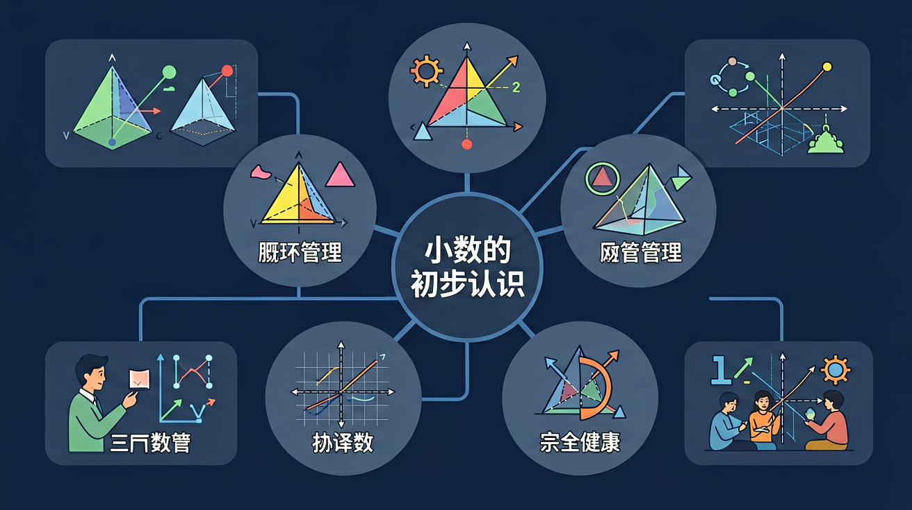

🌍 And（已知）：我们已经学会了整数和分数
⚡ But（问题）：但分数写起来比较麻烦，有没有更简便的方式？
💡 Therefore（新知）：因此我们学习小数，它是分数的另一种表达方式，计算更方便
🎯 能说出小数各数位名称（个位、十分位等）
🎯 能判断两个小数的大小关系
🎯 能将元角分换算成小数形式
❓ 为什么0.5比0.12大，明明12比5大？
❓ 超市标签写着3.50元和3.5元是一个价吗？
❓ 跑步成绩9.87秒为什么比10.23秒快？
学完这一课，这些问题你都能自信地回答。
比较 0.5 和 0.12，结果是？
✨ 走进小数的奇妙世界，从生活中发现数学！
当我们在超市购物时，经常会看到价格标签：¥3.5、¥12.8。当我们用尺子量东西时，结果可能不是整数，比如铅笔长 15.6厘米。这些数里面有个小圆点，我们叫它小数点。小数点左边是整数部分，右边是小数部分！
小数由两部分组成：
整数部分 · 小数点 · 小数部分
小数是分数的另一种写法！
在数轴上，0到1之间可以等分成10份：
每一份是 0.1（十分之一），这就是小数的一位数！
🎯 把小数拖拽到正确的分数描述旁边！
小数
对应意义
小数点，很重要 🔵
左边整数右边小 📏
十分之一是0.1 🔢
生活处处离不了 🌟
💡 常见错误往往就在细节中，仔细检查每一步！
回忆：今天学了哪些关键词和规则？试着说出来。
用自己的话解释今天学的核心概念，不看书能说清楚吗？
用今天的知识解决一个实际问题，或写一个新例子。
把今天的知识与已有知识联系起来：有什么共同点？有什么区别？能不能自己创造一道新题？